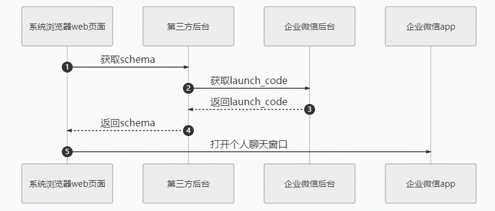

目录
在外部浏览器的web页面上，可通过该schema协议打开个人聊天窗口，目前仅支持windows和mac平台（仅3.1.6及以后版本支持）。注意这是在外部浏览器web页面的调用方式，不需要引入企业微信的jssdk。调用流程如下：

URI schema定义: wxwork://launch?launch_code=xxx
参数说明：
| 参数 | 必须 | 说明 |
|---|---|---|
| launch_code | 是 | 唤起页面的code，可通过获取唤起企业微信code接口获取 |
请求方式： POST（HTTPS）
请求地址： https://qyapi.weixin.qq.com/cgi-bin/get_launch_code?access_token=ACCESS_TOKEN
请求包体：
{ "operator_userid":"zhangshan", "single_chat":{ "userid":"lisi" } }点击复制
参数说明：
| 参数 | 必须 | 说明 |
|---|---|---|
| access_token | 是 | 调用接口凭证 |
| operator_userid | 是 | 当前操作者的userid |
| single_chat | 是 | 参数数据结构体 |
single_chat结构体说明
| 参数 | 必须 | 说明 |
|---|---|---|
| userid | 是 | 需要发起单聊对象的userid，仅支持企业内部成员 |
权限说明：
操作者以及单聊对象需在应用可见范围之内
支持自建应用与第三方应用调用
返回结果：
{ "errcode": 0, "errmsg": "ok", "launch_code":"xxxx" }点击复制
参数说明：
| 参数 | 说明 |
|---|---|
| errcode | 返回码 |
| errmsg | 对返回码的文本描述内容 |
| launch_code | 唤起页面的code，5分钟内有效，只能消费一次。用于URI scheme 客户端协议的launch_code参数 |